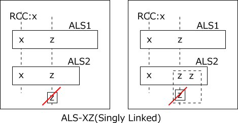
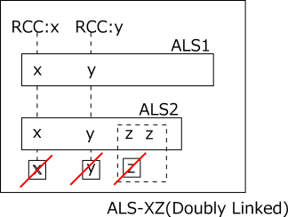
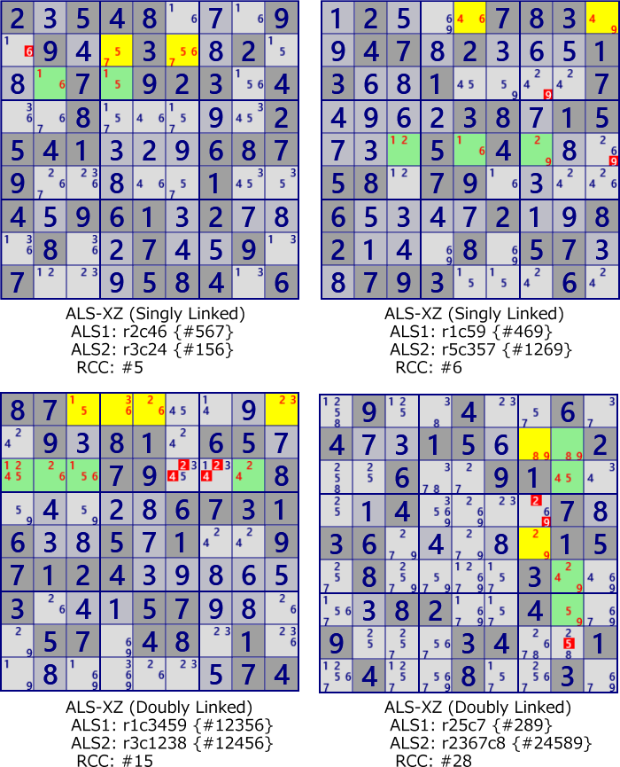

ALS XZ
For analysis algorithms using multiple ALSs, use RCC(Restricted Common Candidate).
Here are two types of ALS XZ (Singly Linked, Doubly linked).
As a characteristic of the analysis algorithm using ALS,
in many cases, there are many solutions at the same time.
There are other analysis algorithms of the ALS system.
ALS XZ(Singly Linked)
Suppose that two ALSs have RCC (digit x). And, let z be the digit contained in both ALS different from RCC. digit z outside the ALS and associated with all z in both ALS can be excluded from the candidate. If z is true, both ALSs are changed to LockedSet, and both ALSs include RCC.

ALS XZ(Doubly Linked)
Suppose that two ALSs have two RCCs (digit x,y).
- digits belonging to the same house as RCC outside ALS can be excluded.
If this is true for one RCC(eg x),
then the two ALSs will be LockedSet and the other RCC(y) will be in both ALSs.
- For a element of ALS digited z(different from RCC), z outside the ALS and related to all z in the ALS can be excluded from the candidate. If this is true, that ALS is a LockedSet and two RCCs belong to this ALS. In the other ALS, there are n-1 candidate digits in n cells, and ALS collapses.

Example of ALS XZ

2.548...9.9..3..2...7.923.4..8.....2541...6879.....1..4.961.2...8..7..9.7...584.6
.2...783..47.2...13..1....7....38.15...5.4...58.79....6....2..82...8.57..793...6.
87........9.81.65....79...8.....67316..5.1..97124.....3...57....57.48.1........74
.9..4..6.4..15...2..6..91....4....7.36.....15.8....3....82..4..9...34..1.4..8..3.
ALS XZ program
ALS management
The size of ALS XZ is the sum of the sizes of the two ALSs and it searches in ascending order of size. GNP00_ALSXZsub is the central part of the ALS XZ analysis. Choose two ALS and check if they have RCC. If there is one RCC, check the establishment of Singly Linked. If there are two RCCs, check the establishment of Doubly Linked. Since ALS has the same configuration from different houses, processing for omitting the same ALS configuration is added.
public partial class ALSTechGen: AnalyzerBaseV2{
public bool ALS_XZ( ){
Prepare();
if( ALSMan.ALSLst==null || ALSMan.ALSLst.Count<=2 ) return false;
for( int sz=4; sz<=14; sz++ ){ if( _ALSXZsub(sz) ) return true; }
return false;
}
private bool _ALSXZsub( int sz ){
if( ALSMan.ALSLst.Count<2 ) return false;
var cmb = new Combination(ALSMan.ALSLst.Count,2);
int nxt=99;
while( cmb.Successor(nxt) ){
UALS UA = ALSMan.ALSLst[cmb.Cmb[0]];
nxt=0; if( !UA.singly || UA.Size==1 || UA.Size>(sz-2) ) continue;
UALS UB = ALSMan.ALSLst[cmb.Cmb[1]];
nxt=1; if( !UB.singly || UB.Size==1 || (UA.Size+UB.Size)!=sz ) continue;
int RCC = ALSMan.Get_AlsAlsRcc(UA,UB);//Common digits, House contact, Without overlap
if(RCC==0) continue;
if( RCC.BitCount()==1 ){ //===== Singly Linked =====
int EnoB = (UA.FreeB&UB.FreeB).DifSet(RCC); //Exclude candidate digit
if( EnoB>0 && _ALSXZ_SinglyLinked(UA,UB,RCC,EnoB) ){
.
. (Solution report code)
.
return true;
}
}
else if( RCC.BitCount()==2 ){ //===== Doubly Linked =====
if( _ALSXZ_DoublyLinked(UA,UB,RCC) ){
.
. (Solution report code)
.
return true;
}
}
}
return false;
}
}
Singly Linked
Set the bit pattern of the cell to be covered and exclude the candidate digits from the cell covering all of them. It is necessary to check for each digit.
public partial class ALSTechGen: AnalyzerBaseV2{
private bool _ALSXZ_SinglyLinked( UALS UA, UALS UB, int RCC, int EnoB ){
bool solF=false;
foreach( var no in EnoB.IEGet_BtoNo() ){
int EnoBx=1<<no;
Bit81 UEz=new Bit81(); //Covered cells
foreach( var P in UA.UCellLst.Where(p=>(p.FreeB&EnoBx)>0)) UEz.BPSet(P.rc);
foreach( var P in UB.UCellLst.Where(p=>(p.FreeB&EnoBx)>0)) UEz.BPSet(P.rc);
Bit81 Elm = (new Bit81(pBDL,EnoBx)) - (UA.B81|UB.B81); //Scan Cells
foreach( var rc in Elm.IEGet_rc() ){
if( (UEz-ConnectedCells[rc]).IsZero() ){ pBDL[rc].CancelB|=EnoBx; solF=true; }
}
}
return solF;
}
}
Doubly Linked
There are two kinds of exclusion in Doubly Linked. One is exclusion of the same digit as RCC. Excluding digits other than the next RCC. For each discrimination process, find the pattern to cover, then find the cells that cover them.
public partial class ALSTechGen: AnalyzerBaseV2{
private bool _ALSXZ_DoublyLinked( UALS UA, UALS UB, int RCC ){
//----- RCC -----
Bit81 UEz=new Bit81(); //Covered cells
bool solF=false;
foreach( int no in RCC.IEGet_BtoNo() ){
int noB=1<<no;
UEz.Clear();
foreach( var P in UA.UCellLst.Where(p=>(p.FreeB&noB)>0) ) UEz.BPSet(P.rc);
foreach( var P in UB.UCellLst.Where(p=>(p.FreeB&noB)>0) ) UEz.BPSet(P.rc);
Bit81 Elm=(new Bit81(pBDL,noB))-(UA.B81|UB.B81); //Scan Cells
foreach( var rc in Elm.IEGet_rc() ){
if( (UEz-ConnectedCells[rc]).IsZero() ){ pBDL[rc].CancelB|=noB; solF=true; }
}
}
//----- ALS element digits other than RCC -----
int nRCC = UA.FreeB.DifSet(RCC);
foreach( int no in nRCC.IEGet_BtoNo() ){
int noB=1<<no;
UEz.Clear();
foreach( var P in UA.UCellLst.Where(p=>(p.FreeB&noB)>0) ) UEz.BPSet(P.rc);
Bit81 Elm =(new Bit81(pBDL,noB))-(UA.B81|UB.B81); //Scan Cells
foreach( var rc in Elm.IEGet_rc() ){
if( (UEz-ConnectedCells[rc]).IsZero() ){ pBDL[rc].CancelB|=noB; solF=true; }
}
}
nRCC = UB.FreeB.DifSet(RCC);
foreach( int no in nRCC.IEGet_BtoNo() ){
int noB=1<<no;
UEz.Clear();
foreach( var P in UB.UCellLst.Where(p=>(p.FreeB&noB)>0) ) UEz.BPSet(P.rc);
Bit81 Elm=(new Bit81(pBDL,noB))-(UA.B81|UB.B81); //Scan Cells
foreach( var rc in Elm.IEGet_rc() ){
if( (UEz-ConnectedCells[rc]).IsZero() ){ pBDL[rc].CancelB|=noB; solF=true; }
}
}
return solF;
}
}